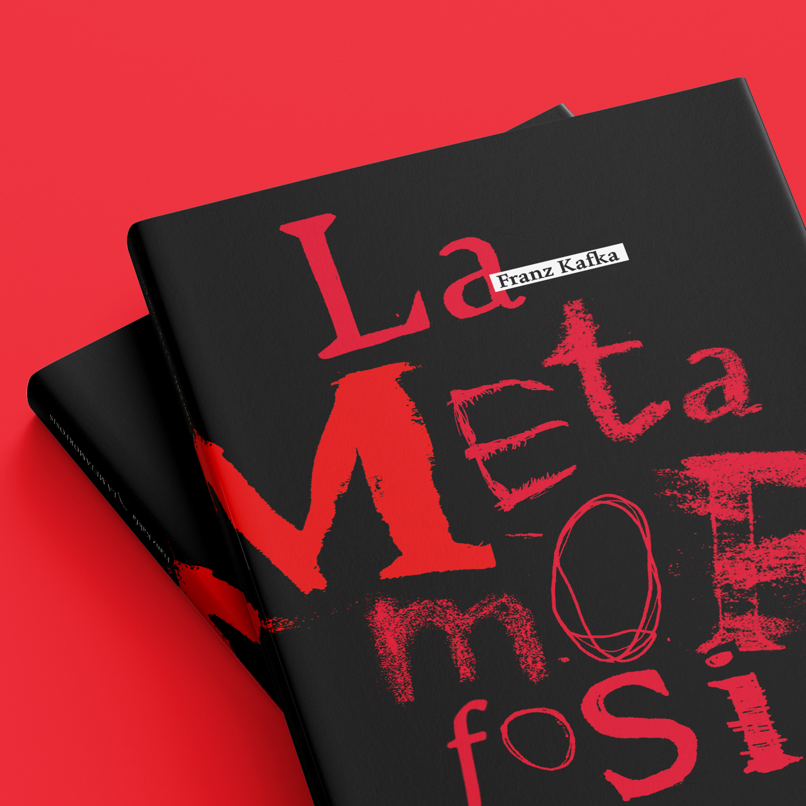
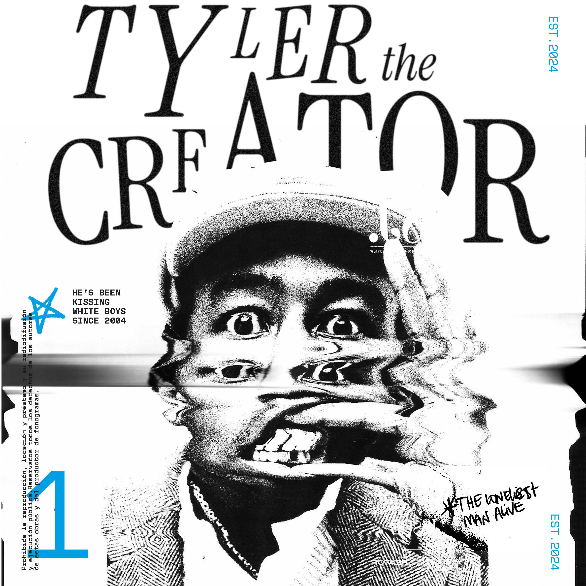
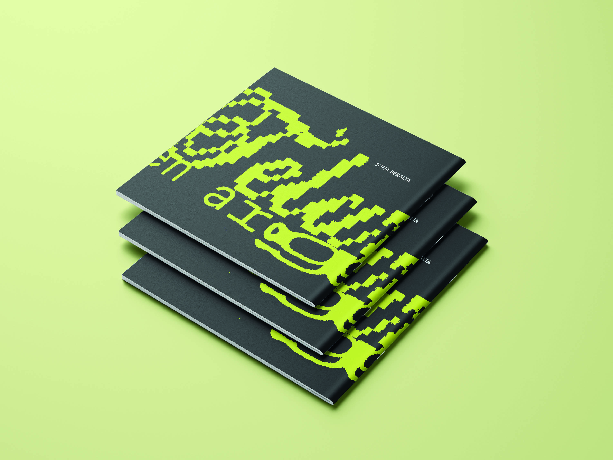

C✶NOCEME!
Hola! Soy diseñadora gráfica, poseo habilidades en el manejo de herramientas de diseño digital y una capacidad para aprender y adaptarme rápidamente a nuevas tecnologías y conceptos. Busco oportunidades para aplicar mis conocimientos en un entorno profesional con el objetivo de contribuir al éxito de proyectos mientras sigo ampliando mi experiencia.
TRABAJOS

LA METAMORFOSIS // Franz Kafka
Diseño de tapas

TYLER, THE CREATOR
Experimentación

TELARES EN ARGENTINA
Diseño editorial